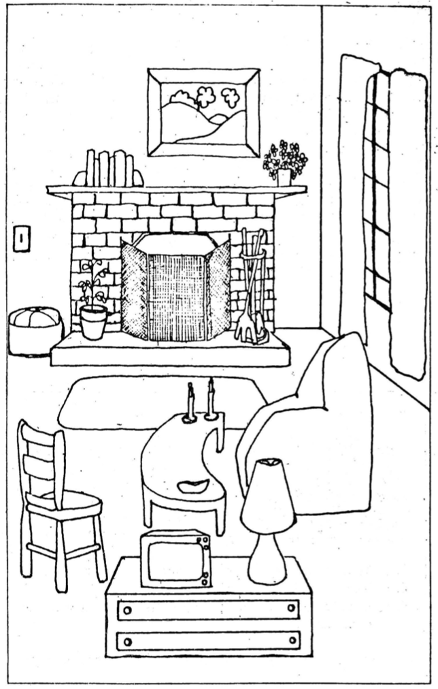

PART TWO
EFFECTIVE WAYS TO RECALL FACTS
Preview Quiz 2
As a preview to what will be discussed in Part Two, try to answer this question:
In which situation would you be best able to recall facts?
Begin reading Part Two to discover the correct answer.
You are reading this lesson because, like many other students, you have found that your memory is not always reliable and you want to improve it. This short lesson cannot attempt to accomplish what a complete course in memory training could do for you, but it will attempt to highlight some of the memory techniques which have helped people remember easily such facts and details as names, places, dates, events, circumstances, etc.
A student who registered at a well-known school of memory training told his instructor that he had spoken to a study counselor about his bad memory. He was told that nothing could be done about his problem; his was just a naturally poor memory. That was probably one of the crudest bits of advice ever given. This student was made to believe that he had been born with a poor memory and would have to learn to live with it.
No one is born with a naturally poor memory. Of course, individuals differ widely in their powers of memory, just as they do in other areas. But there is no real excuse for accepting a poor memory as a fact of life.
What we call forgetting is, in reality, faulty recall. Techniques can be learned to improve recall, for the memory is an intellectual faculty which can be strengthened and developed.
Reading with Interest Helps the Reader Recall Facts
Why do we pay special attention to some things and not others? Certain things command our attention because they interest us more or are more important to us.
For example, Bob read the owner's manual he received with a new trail bike he bought. Actually, he skimmed rapidly through the manual. A few days later, the engine stalled when Bob was miles from nowhere. He remembered reading somewhere in the manual the steps which should be followed in case of engine failure, but his recollection was vague. When he had read the manual, Bob did not seek out with interest those facts which could be of use to him. He read the facts, but they failed to make an impression on him because he failed to actualize his interest. When Bob eventually got home, he reread with interest that section of the manual which was now important to him. Needless to say, the next time he has engine trouble he will know exactly what to do.
If you want to remember certain facts and details, try to associate them with as many of your personal interests and needs as possible. This effort will help keep the facts at the surface of your memory for instant recall and use. How will this information affect me? Will it help me get better grades? Why should I try to remember it? These questions in themselves will tend to awaken your interest and greatly increase the likelihood of recall. If you are strongly motivated to remember, chances are you will remember.
Preview Quiz 3
As a preview to what will be discussed next, try to answer this question:
Your friend asks you what you saw at the museum, and you were able to give him a detailed description. This was probably due to the fact that
Continue reading to discover the correct answer.
Good Recall Depends on Careful Observation and Concentration
Why do we remember some things and forget others? The following exercise may help to supply the answer.
Call to mind the last time you walked in a downtown area. Read the following questions and write your answers on a separate piece of paper. Try to make your answers definite.
Examine your answers carefully. You will probably wonder why you have remembered some things and forgotten others. Research has shown that we remember part of what we see and hear but forget most. This applies not only to the details of the walk which you have tried to recall, but also to every other human activity, including reading.
Why do we remember certain things and forget others?
A person remembers best those things which he finds interesting, examines carefully, and thinks about seriously.
If you refer to the questions you have just answered, I think you will agree that the facts and details of your walk which you remember best are those which interested you at the time and received more than just a passing thought. This general principle also applies to remembering facts and details in your reading.
Reading with the Intention of Recalling Facts
Of course, not all the facts on a printed page are worth recalling. In your everyday, casual reading and certainly in your more serious reading, you should make distinctions between important and unimportant facts. It is impractical to try to recall everything we read; for, even if that were possible, our minds would be overloaded with much useless information. Decide, as you read, which facts are meaningful and important. Tell yourself that you will need this information at a later time, and take the time to reread. If you do this, you will have a good chance of recalling these facts when you need them. When you take the time to decide if certain facts are important, you are likely to remember them better, for your interest was aroused and you invested a few seconds to think about them.
Preview Quiz 4
As a preview to what will be discussed next, try to answer this question:
How can your ability to recall facts be improved?
Continue reading to discover the correct answer.
The accompanying exercise will test your ability to recall things you have read with the intention to recall.
Examine the illustration on the right. Study the illustration carefully and as you read the following list of 20 words, and locate in the illustration each of the objects listed. After you have done this, close your book and write the names of every object you can remember. Next compare your list with the following list. If you recalled most of the 20 objects, your ability to recall facts which you read with intention to recall is superior. Regardless of the results of this practice exercise, you should understand that your ability to recall facts can be fundamentally improved if you decide, as you read and reread certain facts, that you will want to recall them at a later time. This simple action is often sufficient to guarantee recall of the particular facts.
Recalling Facts and Rate of Reading
Speed reading courses have attracted much public interest in the past ten or fifteen years. Reading advisers claim that they can help anyone double his reading rate while improving his comprehension. It is important to remember that the rate of reading should never be so high as to interfere with understanding.
Comprehension should never be sacrificed in favor of speed.
If a student has difficulty comprehending ideas and recalling facts in his reading assignments, he should not attempt to increase his rate of reading. Excessive speed will only compound the problems he already has with word meaning, sentence meaning and paragraph meaning. A slow reader is not condemned to remain a slow reader. His rate of reading will increase as he learns and makes better use of the techniques which contribute to improved recall of facts and better understanding of ideas.
Summary
The four aids to recalling facts and details discussed in this lesson are really common-sense techniques which take into consideration a person's emotional and psychological makeup.
Unless someone is blessed with an unusual memory, he has to use practical methods to improve his ability to recall facts and details when reading.
Inability to recall facts when reading can be traced to faulty recall. But, since no one is born with a bad memory, it stands to reason that something can be done to improve recall.
We have seen that a person recalls easily those facts and details which are of genuine interest to him. This interest naturally results in an increase in that person's level of thought and concentration. This mental activity jogs the memory and produces a lasting impression.
We cannot be interested equally in everything we read, but it is useful to know that our ability to recall can be increased if we make a conscious effort to develop some interest in those facts and details which could be of use to us in the classroom or elsewhere.
It has been demonstrated that interest stimulates concentration and that together they greatly improve memory. If, in addition to interest and concentration, you read at a calm, unhurried pace, and deliberately reread those facts and details which you have the intention of recalling, you will remember them.
These aids to recall are quite simple. They will produce encouraging results if you make a conscious and deliberate effort to use them.
The sample exercise which follows will provide you with an opportunity to apply the principles of recall which have been highlighted in this lesson. Before you go on to Part Three, reread the four headings of the lesson and keep them in mind as you read the sample paragraph.